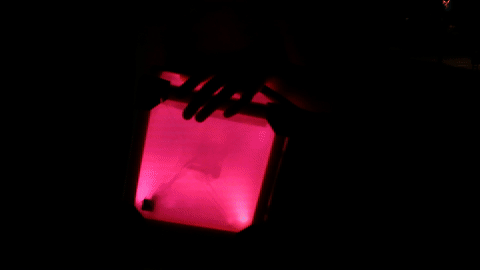
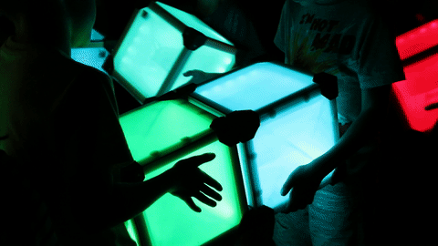
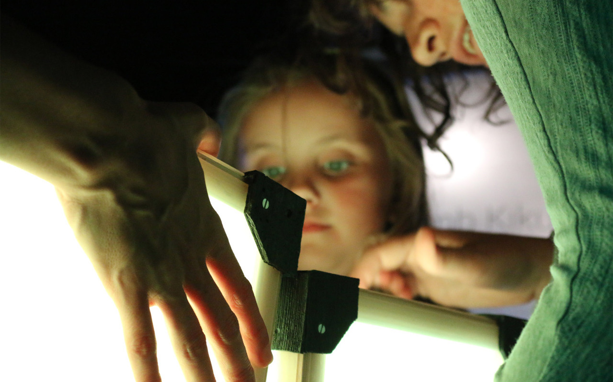
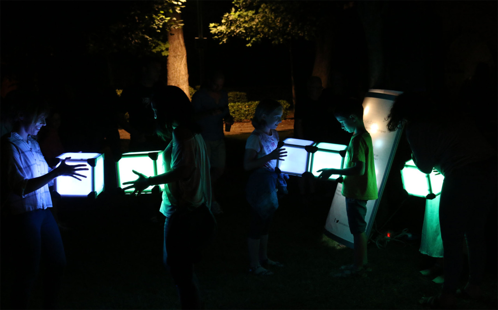
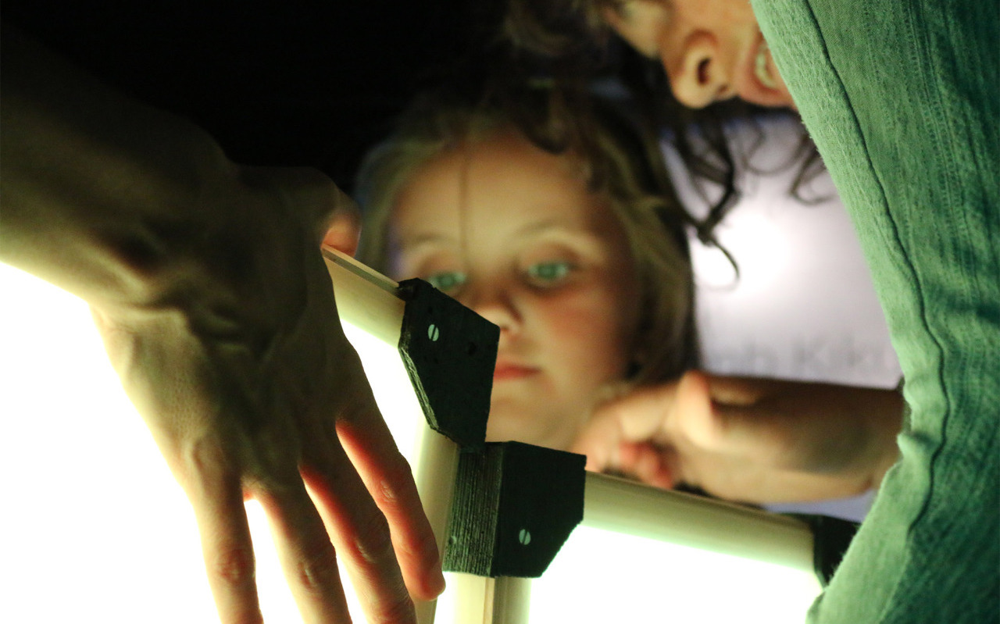
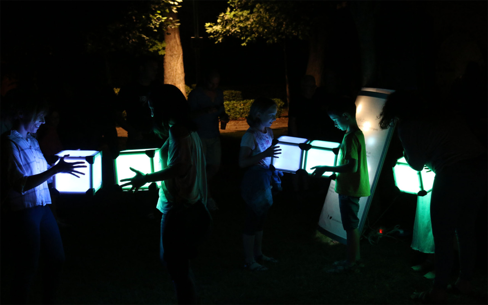
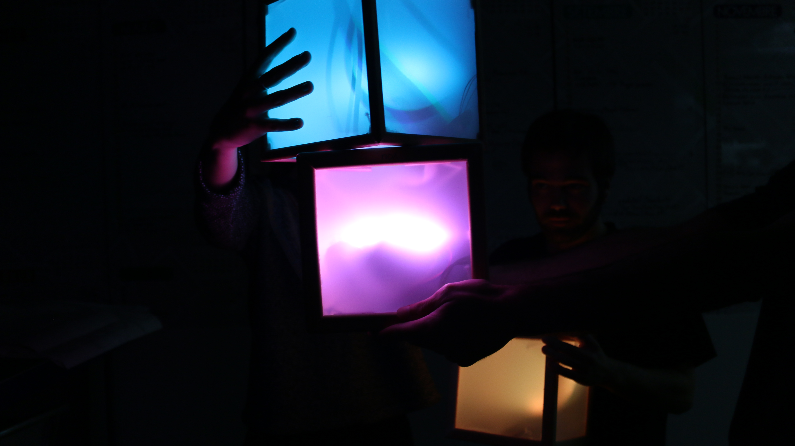
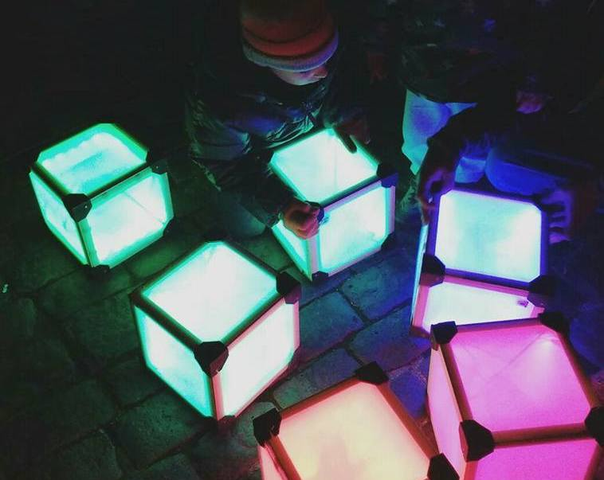
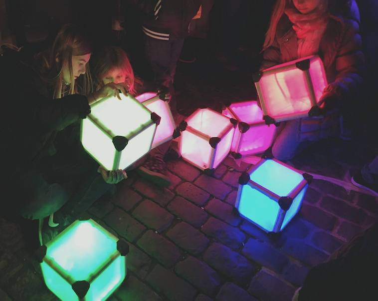
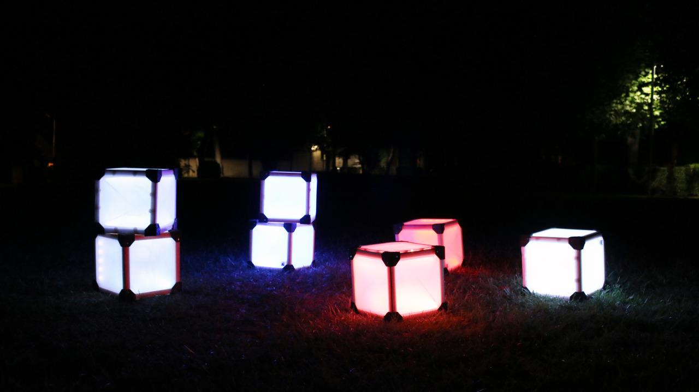

MIMÈTIK
A nature-mimicking collaborative and interactive music installation
keywords: interactive installation, interactive art, social interaction
  



Mimètik is a collaborative interactive installation, focusing on the relationship between light and soundscapes of nature. Mimètik is the derivative of the project Kikubes.
The installation was developed with the help of two engineers and an interaction designer and was presented at several festivals. The installation consists of several light-emitting cubes which users can pick up and move to manipulate the light and sound of the installation. Each cube exists in primarily three states: red green and blue. Each state corresponds to a different element in nature. Red signifies heat, fire, desert, dry. Green represents forest, earth, wilderness, plants and animals. Blue represents underwater, cold, wind, snow, mountains. While a user’s cube is in one of these states, he/she can rotate and move the cube to explore the color tones inside that state. For example, red will reveal tones of pink and orange.  The cubes are individual identities but can influence the others by changing their own color to copy or “mimic” the other cube. When this happens the cube goes into a transition period, where its light slowly blinks through all the colors in the spectrum between the two states in the transition. The global sound of the installation also depends on the states of the cubes. The soundscape will change to represent sounds and textures of each state and also drastic changes (such as thunder, or a storm) when transitioning from one state to another.   My role in the development of the installation involved designing the interaction and light/sound feedback, coding the microcontroller inside each cube to animate the light depending on the cube’s sensors, communicate each cube via Bluetooth to a server computer and send each cube’s state information, process the information and change the sound according to the data. The work also involved user testing, prototyping, software programming using Arduino and OpenFrameworks and industrial design and building the hardware parts of the cubes. Mimètik was presented at the festivals Festus 2016 and Lluèrnia 2016 by Ideots. 